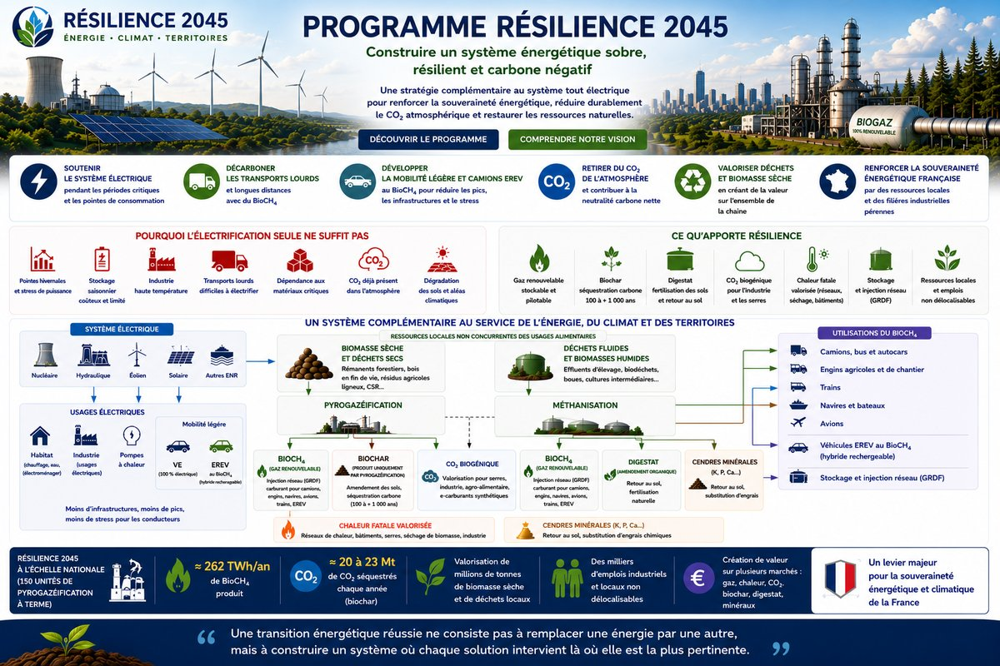

Le bio-CH₄ de Résilience complète et renforce l'électrification — il cible les usages où l'électrique est structurellement insuffisant. Il ne vise pas à remplacer le gaz fossile actuel : la biomasse disponible ne le permettrait pas à cette échelle.
La séquestration carbone nette visée est de 20 à 23 Mt CO₂eq/an par le biochar (EBC/Puro.earth, 100–1 000 ans). Potentiel additionnel via CO₂ biogénique piégé par voie géologique ou carbonatation — non encore comptabilisé dans cette fourchette.
Ce site a une logique de lecture — choisissez votre niveau d'entrée.
Les cinq contraintes structurelles que les scénarios officiels n'adressent pas. Puissance, matériaux, réseau, carbone des sols, mobilité lourde.
Commencer ici →Bio-CH₄ · Biochar · ÉREV · Séquestration carbone · Double dividende agronomique. Les six piliers du programme et leurs interactions.
Voir le système →Neuf documents détaillés, annexes de validation, réponses aux objections institutionnelles. Chiffres sourcés, hypothèses explicitées.
Accéder aux documents →Chaque section du programme est accessible directement.
Plus on se déplace, plus on nettoie la planète et l'atmosphère.